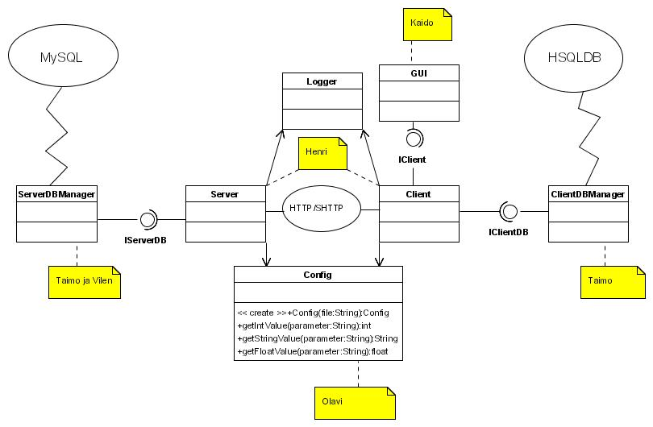

JUSS on eelkõige programm failide jagamiseks ja haldamiseks keskse serveri abil. Üldine põhimõte on natuke sarnane CVSile, kuid eelkõige ette nähtud binaarsete failide jaoks ja versioonide tegemine on kasutaja otsustada (ei toimu automaatselt). Süsteem ei ole anonüümne - kõigil on kasutaja serveris ja kasutajaks saamist juhib serveri administraator.
Kasutaja peab saama korraga ühendada ennast mitme serveriga, seal faile brausida ja endale alla laadida. Samuti saab ta neid faile (ja ka katalooge) kommenteerida ja hinnata. Faili/kataloogi üles pannes on võimalik juurde panna märksõnad ja kirjeldus. Eksisteerib otsingusüsteem mis suudab kõige selle metadata põhjal faile/katalooge leida.
Serveri poolel eksisteerib siis kasutajate haldamise süsteem ja samuti ka projektide süsteem. Projekt on kasutajate ja failide kogum, mis grupeerib failid ühte loogilisse üksusesse (visuaalselt siis kataloogi) ja kus kõigil sinna kuuluvatel kasutajatel on mingid kindlad õigused. Nendel kes pole projekti liikmed pole isegi õigusi projekti sisu näha, kui just projekti kasutajaks pole ka "Everyone".
Üldiselt kohalik arvuti peegeldab kataloogi struktuuri serveris, kuid ainult niivõrd kui kasutaja on enda arvutisse ära tõmmanud. Kommentaarid ja muu metadata salvestatakse ka kohalikku (kliendi) andmebaasi, et oleks seda kiiremini võimalik bausida. Toimuvad kontrollid lokaalse ja serveri andmebaasi sünkroonis hoidmiseks. Kui kasutaja pole online, on tal ikka võimalik brausida seda osa struktuurist, mida on varem vaadanud (kuigi info ei pruugi olla kõige uuem).
Sihtgrupiks on eelkõige grupid ja asutused, kes vajavad eelkõige mitte-ascii failide jagamist ja nende versioonide haldamist. Näiteks siis programmeerimise projektid, kus on vaja hallata peale koodi veel suurt hulka meedia faile.
Kasutaja saab teha järgmiseid asju:
Süsteem põhineb keskserveril, mis töötab Tomcat HTTP serveri abiga Java servlet arhitektuuril. Esialgu on plaanis teha eraldi seisev SWT-l põhinev client, kuid HTTP protokolli kasutamine võimaldab ka lisada veebi liidese. Nii serveri kui ka client-i poolel eksisteerib andmebaas. Serveris on selleks MySQL, client-is sisse ehitatud HSQLDB.
Üldine struktuur:
